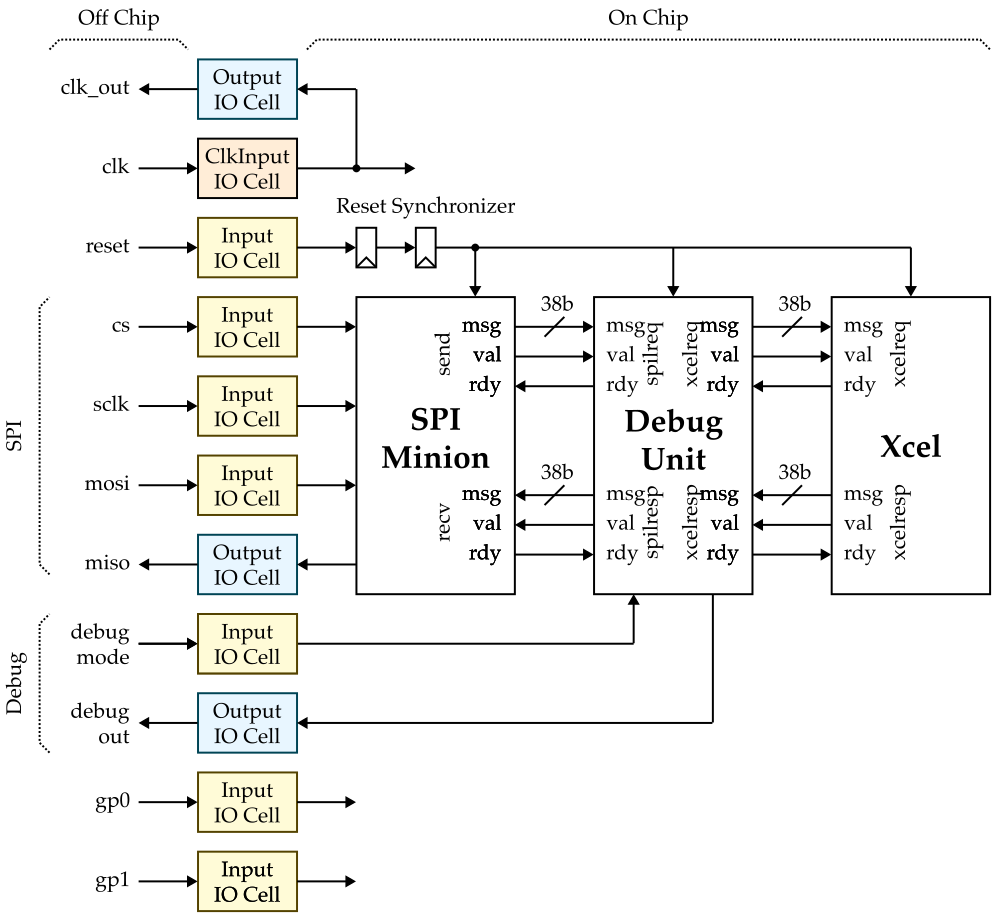
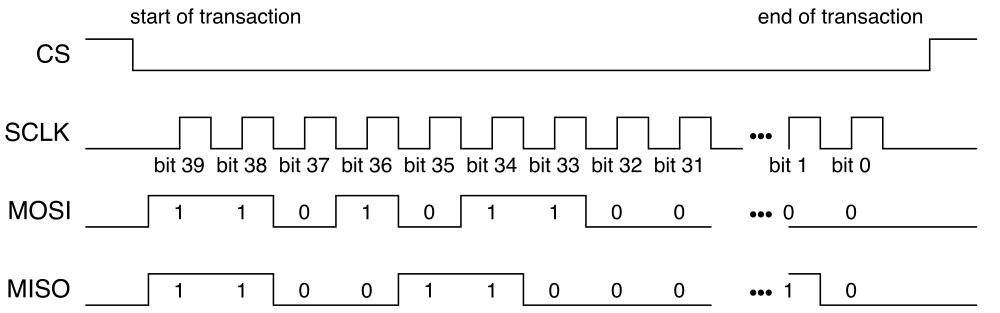
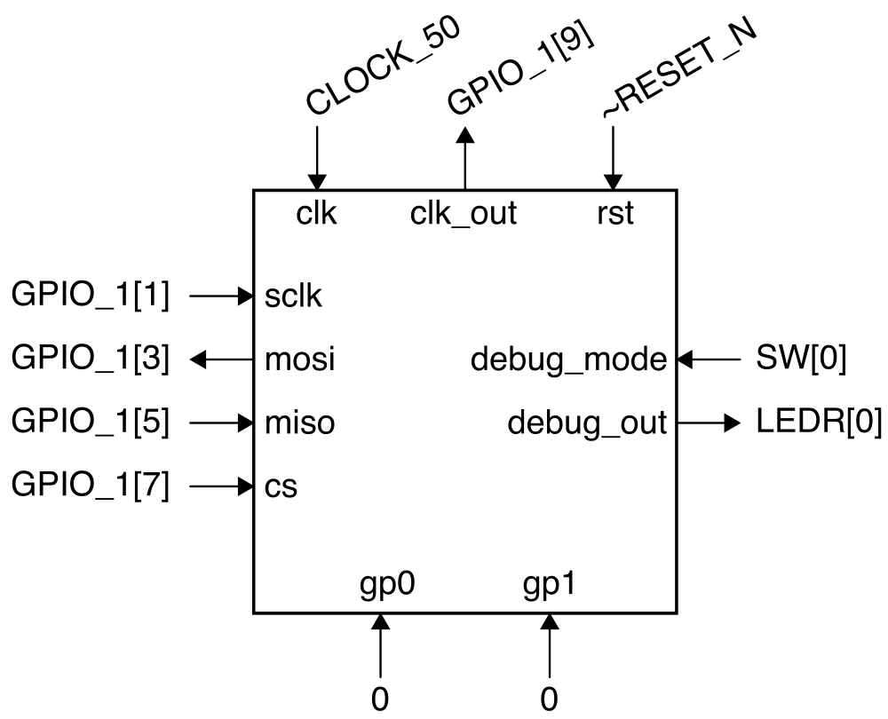
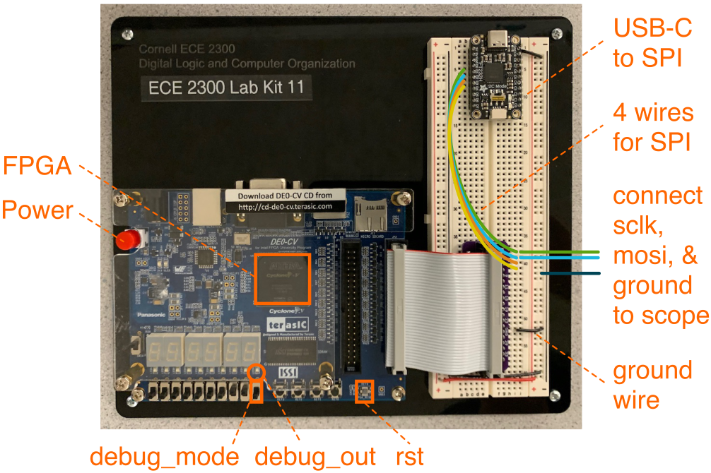

Lab 1: FPGA Emulation
In this lab, you will be using FPGA emulation to verify your accelerator tape-out. FPGA emulation is the process of mapping the RTL for a chip to an FPGA, and then testing the FPGA in the same way as we will eventually test the actual tape-out. We will start by reviewing what we put on the tapeout including details about the SPI protocol we will be using to thest the chip before:
- revising our pre-silicon verification
- creating an FPGA emulator for your accelerator tape-out
- SPI testing using your FPGA emulator
- Accelerator testing using your FPGA emulator
To get started find a free workstation and log in with your NetID and NetID password.
1. Background on SPI Protocol
Let's start by reminding ourselves the block diagram for the top of our accelerator tape-out:

Recall that we interact with your accelerator by sending accelerator request messages and receiving accelerator response messages. An accelerator request message includes a 1-bit type field (type = 0 for reads and type = 1 for writes), 5-bit register address field, and 32-bit write data field for a total of 38 bits:
37 36 32 31 .... 0
+------+-------+-----------+
| type | raddr | wdata |
+------+-------+-----------+
An accelerator response message includes a 1-bit type field and 32-bit read data field for a total of 33 bits:
1.1. SPI Basics
The SPI minion interfaces with a SPI master controlled by the host workstation. SPI is a very basic four-wire serial protocol with the following timing diagram:

Each SPI transaction involves exchanging an SPI request and an SPI response between the SPI master and the SPI minion using the following steps assuming we want to exchange 40-bits of data.
- Step 1: SPI master sets CS low (this is how the SPI minion knows the start of an SPI transaction)
- Step 2: SPI master toggles SCLK 40 times, once for each bit of data
- Step 3: SPI master writes MOSI with each bit of the SPI request on the falling edge of SCLK while the SPI minion writes MISO with each bit of the SPI response on the falling edge of SCLK
- Step 4: SPI minion reads MOSI on the rising edge of SCLK while the SPI master reads MISO on the rising edge of SCLK
- Step 5: SPI master sets CS high (this is how the SPI minion knows the end of an SPI transaction)
When an SPI transaction is done, the master has sent the minion 40-bits of data at the same time as the minion has sent the master 40-bits of data.
1.2. SPI for Xcel Tape-Out
For our accelerator tape-out, we will be using SPI to send and receive
accelerator messages. The SPI request format for this course always
includes a 1-bit valid field, a 1-bit constant field which is always one,
and then potentially a 38-bit accelerator request message. The val bit
specifies whether this SPI request contains a valid accelerator request
message.
39 38 37 36 32 31 .... 0
+------+------+------+-------+-----------+
| val | 1 | type | raddr | wdata |
+------+------+------+-------+-----------+
The SPI response format for this course includes a 1-bit valid field, a 1-bit constant field which is always one, a 5-bit field which is always zero, and then potentially a 33-bit accelerator response message.
39 38 37 33 32 31 .... 0
+------+------+-------+------+-----------+
| val | 1 | 00000 | type | rdata |
+------+------+-------+------+-----------+
The SPI protocol involves the master sending an accelerator request and then waiting until the minion sends back the corresponding accelerator response:
-
The host uses an SPI request with the valid bit set to one to send an accelerator request to the accelerator tapeout
-
The host then uses an SPI request with the valid bit set to zero to repeatedly poll until eventually the SPI response is valid meaning the accelerator is sending back the corresponding accelerator response
So writing xr0 with the value 0xdeadbeef would look like this:
------- SPI request ------- ------ SPI response -------
val 1 type raddr wdata val 1 00000 type rdata
----------------------------------------------------------
1 1 1 0 0xdeadbeef -> 0 1 00000 0 0x00000000 # send xcel req
0 1 0 0 0x00000000 -> 0 1 00000 0 0x00000000 # ... waiting ...
0 1 0 0 0x00000000 -> 0 1 00000 0 0x00000000 # ... waiting ...
0 1 0 0 0x00000000 -> 1 1 00000 1 0x00000000 # recv xcel resp
1.3. Debug Unit
Every accelerator tape-out also has a debug unit which sits between the SPI minion and the accelerator. An external input pin on the chipcan turn on/off debug mode. When in debug mode, the host workstation can only read and write xr0 which maps to a debug register in the debug unit. Reading and writing any other accelerator register while in debug mode is undefined. The least significant bit of the debug register is connected to the debug out pin on the chip.
2. Pre-Silicon Verification
Let's now reproduce our pre-silicon verification. Log into ecelinux
using VS Code and clone a fresh copy of your tapeout repository. Then be
sure to checkout the tapeout-v2-branch which is the exact version of
the repository you taped out last spring.
% source setup-ece6745.sh
% cd ${HOME}/ece6745
% mv project2-groupXX project2-groupXX-backup
% git clone git@github.com:cornell-ece6745/project2-groupXX
% cd project2-groupXX
% git checkout tapeout-v2-branch
% mkdir -p sim/build
% cd build
Take a look at your chip top and convince yourself it matches the block diagram shown above.
2.1. Xcel Verification
Then run all of the tests for your accelerator in isolation as well as all of the chip tests.
2.2. Xcel Chip Verification
We want to run these exact same chip tests on the FPGA emulator and eventually the actual chip. We will do this by dumping all of the accelerator request messages and the (correct) accelerator response messages to an xmsgs file. Then we can replay the accelerator request messages from the xmsgs file on the FPGA emulator or chip and check that the accelerator response messages returned from the FPGA emulator or chip exactly match the expected accelerator response messages.
You can generate the xmsgs files with the --dump-xmsgs command line
option to pytest like this:
% cd ${HOME}/ece6745/project2-groupXX/sim/build
% pytest ../proj2/test/Proj2XcelChip_test.py --verbose --dump-xmsgs
Look inside one of the xmsg files:
Each xmsg file looks like this:
The first field is the type, the second field is the accelerator register address, the third field is the write data, and the final field is the read data. Remind yourself what some of your tests do and make sure the xmsgs files match your expectations.
We now need to commit the xmsg files to your repo.
% cd ${HOME}/ece6745/project2-groupXX/sim/build
% mv *.xmsgs ../../xmsgs
% git add ../../xmsgs
% git commit -m "added xmsgs"
% git push
2.3. Clone Repo
We now need to get the files for your design and your xmsg files from
ecelinux onto the workstation. This requires multiple steps.
-
Step 1. Click Microsoft Edge on the desktop to open a web-browser on the workstation to log into GitHub and then find your repository
-
Step 2. Start PowerShell by clicking the Start menu then searching for Windows PowerShell
-
Step 3. Use the following command to change to your home directory on the workstation in the lab (where
netidis your Cornell NetID)
- Step 4. Clone your repo onto the workstation by using this command in
PowerShell (where
netidis your Cornell NetID, notice we are using https!):
-
Step 5. In the Connect to GitHub pop-up, click Sign in with your browser
-
Step 6. You may be asked for your GitHub username again and you may be asked to authorize the Git Credential Manager; click authorize git-ecosystem
-
Step 7. Change into your repo, checkout the tapeout branch, and using
treeon the workstation:
3. FPGA Emulation
We will now integrate your accelerator tape-out into the FPGA, synthesize the design, and configure the FPGA so we can use FPGA emulation to verify your design.
Use the USB-C cable to connect the SPI adapter on the breadboard to the top-left USB port of the workstation. You must use the top-left USB port of the workstation; any other port will not work! Then use the USB-B cable to connect the FPGA board to the workstation.
3.1. Setup Quartus Project
Click Quartus (Quartus Prime 18.1) on the desktop to start Quartus. Then, click Run the Quartus Prime software. You might need to try starting Quartus twice. Setup a new Quartus project using the New Project Wizard:
- Directory, Name, Top-Level Entity
- You must enter the working directory as follows with your NetID!
- Working directory:
C:\Users\netid\fpga-emulation - Name of this project:
fpga-emulation - Name of top-level design entity:
fpga-emulation - Click Next
- Directory does not exist. Do you want to create it?
- Click yes
- Project Type
- Choose Empty Project
- Click Next
- Add Files
- Click User Libraries...
- Click triple dots to the right of Project library name
- Click on This PC, then navigate to your cloned repo by choosing Windows (C:) > Users > netid > project2-groupXX > sim where XX is your group number
- Click Select Folder
- Click Add
- Click OK
- Click triple dots to right of File name
- Click on This PC, then navigate to your cloned repo by choosing Windows (C:) > Users > netid > project2-groupXX > sim > proj2 where XX is your Cornell NetID
- Click on just
Proj2XcelChip.v(do not include any other files!) - Click Open
- Click Next
- Family, Device, and Board Settings
- Click Board tab
- Family: Cyclone V
- Select DE0-CV Development Board
- Make sure Create top-level design file is checked
- Click Next
- EDA Tool Settings
- Click Next
- Summary
- Click Finish
You must use the following steps to ensure Quartus knows your design includes SystemVerilog:
- Choose Assignments > Settings from the menu
- Select the category Compiler Settings > Verilog HDL Input
- Under Verilog version click SystemVerilog
- Click OK
3.2. Integrate
We want to implement the FPGA emulator with the following specification:
- 50MHz clock on the FPGA is connected to chip clock pin
- Reset button (ACTIVE LOW!) is connected to chip reset pin
- Switch
SW[0]is connected to chip debug mode pin LEDR[0]is connected to chip debug out pin- Constants 0 are connected to chip gp0/gp1 pins
- The general-purpose pins will be used to connect clock out and SPI
- Clock out connects to
GPIO_1[9] - SCLK connects to GPIO_1[1] which connects to D0 on USB-to-SPI adapter
- MOSI connects to GPIO_1[3] which connects to D1 on USB-to-SPI adapter
- MISO connects to GPIO_1[5] which connects to D2 on USB-to-SPI adapter
- CS connects to GPIO_1[7] which connects to D3 on USB-to-SPI adapter
- Clock out connects to
Here is a block diagam and annotated FPGA board and breadboard diagram illustrating our FPGA emulator.


Here is a template you can use for your design:
proj2_Proj2XcelChip chip
(
.clk (),
.reset (), // remember reset is active low!
.sclk (),
.mosi (),
.miso (),
.cs (),
.debug_mode (),
.debug_out (),
.clk_out (),
.gp0 (),
.gp1 ()
);
Use the following steps when you are ready to integrate the chip.
- Double-click on DE0_CV_golden_top
- Instantiate the template shown above
- Fill in the connections to the top-level ports
- Choose File > Save from the menu
You will also need to add the following to the very top of your
Proj2XcelChip.v file:
// Quartus does not define SYNTHESIS, so we need to do so here just to
// make sure we remove any non-synthesizable code.
`define SYNTHESIS
Then make sure to hook up the SPI interface on the breadboard as mentioned above.
- SCLK connects to
GPIO_1[1]which connects to D0 on USB-to-SPI adapter - MOSI connects to
GPIO_1[3]which connects to D1 on USB-to-SPI adapter - MISO connects to
GPIO_1[5]which connects to D2 on USB-to-SPI adapter - CS connects to
GPIO_1[7]which connects to D3 on USB-to-SPI adapter
Connect the two oscilloscope primary probe points to the SCLK and MOSI pins of the SPI interface. Be sure also to connect the ground probe points to ground.
3.3. Synthesize
In addition to the above, we need to give Quartus information about our timing constraints, so that it can properly analyze the timing of our design and analyze the critical path. This is analogous to the timing constraints we had to give to Synopsys DesignCompiler and Cadence Innovus for the tape-out.
- Choose File > New from the menu
- Select Synopsys Design Constraints File
- Add the following constraints:
set_max_delay -from [all_inputs] -to [all_outputs] 20
set_min_delay -from [all_inputs] -to [all_outputs] 0
create_clock -name clk -period 20 [get_ports {CLOCK_50}]
set_input_delay -add_delay -clock clk -max 0 [all_inputs]
set_input_delay -add_delay -clock clk -min 0 [all_inputs]
set_output_delay -add_delay -clock clk -max 0 [all_outputs]
set_output_delay -add_delay -clock clk -min 0 [all_outputs]
- Choose File > Save As from the menu
- Save as
timing.sdcwithin yourfpga-emulationdirectory
Now choose Processing > Start Compilation to start synthesis and place-and-route for your design.
Now let's see how many gates our design is using.
- Choose Processing -> Compilation Report from the menu
- Under Table of Contents choose Fitter > Resource Section > Resource Usage Summary
- Look through the report to determine what percentage of the total FPGA resources are being used (use the "Logic Utilization" row at the top of the area report)
Let's also look at the area on the FPGA used by the processor FPGA prototype using the chip planner.
- Chip Planner
- Choose Tools > Chip Planner from the menu
- Identify where the logic used to implement your design is located in the FPGA
- Choose File > Close from the menu to close the chip planner
The final step is to analyze the timing (i.e., the critical path delay) of your FPGA emulator just like what we did for the tape-out in the spring. We will analyze timing for the Slow 1100mV 85C Model which is the default choice in the Timing Analyzer.
- Choose Tools > Timing Analyzer from the menu
- Double-click Update Timing Netlist
- Choose Reports > Custom Reports > Report Timing from the menu
- Report Timing
- Clocks - From clock: clk
- Clocks - To clock: clk
- Targets - From: [get_registers *]
- Targets - To: [get_registers *]
- Report number of paths: 1
- Click Report Timing
- Identify the propagation delay of the displayed path
- Look at the actual critical path (i.e., Data Arrival Path) which shows the longest path from one of the inputs through your design to one of the outputs
- Choose File > Close from the menu to close the timing analyzer
3.4. Configure
Now we are finally ready to configure the FPGA for TinyRV1 single-cycle processor prototype.
- Choose Tools > Programmer from the menu
- Click Hardware Setup
- Currently selected hardware: USB-Blaster [USB-0]
- Click Close
- Click Start
4. SPI Testing
We will start by just testing the SPI interface using debug mode, so go ahead and flip the debug mode switch.
4.1. Using REPL
Start PowerShell by clicking the Start menu then searching for Windows PowerShell. Then start Python and use the following commands to exchange SPI transactions with the FPGA.
% python
>>> from pyftdi.spi import *
>>> spi_controller = SpiController()
>>> spi_controller.configure('ftdi://ftdi:232h/1')
>>> spi = spi_controller.get_port(cs=0, freq=1000, mode=0)
>>> spi.exchange(0xe0_0000_0001.to_bytes(5),5,duplex=True).hex()
>>> spi.exchange(0x80_0000_0000.to_bytes(5),5,duplex=True).hex()
>>> spi.exchange(0xe0_0000_0000.to_bytes(5),5,duplex=True).hex()
>>> spi.exchange(0x80_0000_0000.to_bytes(5),5,duplex=True).hex()
Why are we using 0xe0_0000_0001? Recall that the top three bits in an SPI request correspond to the valid bit, the constant 1 bit, and the type field. So the first transaction writes acceleator register xr0 with the value 1.
Why are we using 0x80_0000_0000? Again that the top three bits in an SPI request correspond to the valid bit, the constant 1 bit, and the type field. So the second transaction is an invalid request; we are basically waiting for the accelerator response message.
So the above sequence writes xr0 with the value 1, then writes xr0 with the value 0. This should toggle the debug out pin (i.e., the LED).
Let's also look at the SPI transactions on the oscilloscope.
- Turn on the oscilloscope
- Press Default Setup
- Press 2 to turn on Channel 2
Now use the Python REPL to exchange SPI transactions. You should see the oscilloscope flicker. Using the following steps to capture a waveform of the SPI packets on the oscilloscope.
- Rotate the Horizontal Scale knob counter clockwise to 20ms
- Continue to exchange SPI transactions (i.e., press up arrow key in PowerShell and then enter), see SPI packets flicker
- Rotate the Vertical Position knob of channel 2 counter-clock wise
- Continue to exchange SPI transactions ... position channel 2 below channel 1 using Vertical Position knob
- Rotate the Horizontal Position counter clockwise to move the signal to the left
- Continue exchange SPI transactions and adjust the vertical/horizontal position
- Rotate the Trigger Level kbob clockwise until the trigger is about 1V higher than baseline voltage level
- Press Single
- Exchange an SPI transactions again to get a captured waveform
4.2. Using xmsgs
e have provided you with a Python program to make it easier to send
accelerator requests to the FPGA emulator and eventually your chip. In
PowerShell on the workstation, change into the xmsgs subdirectory and
then run the ece6745-check-xmsgs script.
You can use the --debug-mode command line option to write/read data
to/from the debug unit like this:
% cd C:\Users\netid\project2-groupXX\xmsgs
% python ece6745-check-xmsgs --verbose --debug-mode 1
% python ece6745-check-xmsgs --verbose --debug-mode 0
% python ece6745-check-xmsgs --verbose --debug-mode 1
% python ece6745-check-xmsgs --verbose --debug-mode 0
% python ece6745-check-xmsgs --verbose --debug-mode 0xdeadbeef
5. Accelerator Testing
Now that we know the SPI is working, we can test the actual accelerator
using the xmsgs files we generated earlier. Start by picking the simplest
xmsg file you have. Let's assume it is called simple.xmsgs. Then use
the ece6745-check-msgs script to replay the accelerator requests and
check the accelerator responses.
Try a few more and then try all of them at once.
You have now successfully completed pre-silicon verification and FPGA emulation of your accelerator tape-out! We will be using a similar approach to test your chip.